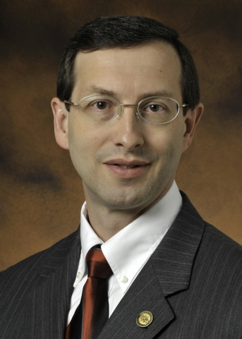

Keynotes
Dr. Ernest Moniz
Secretary of Energy
U.S. Department of Energy
As United States Secretary of Energy, Dr. Ernest Moniz is tasked with implementing critical Department of Energy missions in support of President Obama’s goals of growing the economy, enhancing security and protecting the environment. This encompasses advancing the President’s all-of-the-above energy strategy, maintaining the nuclear deterrent and reducing the nuclear danger, promoting American leadership in science and clean energy technology innovation, cleaning up the legacy of the cold war, and strengthening management and performance.
Prior to his appointment, Dr. Moniz was the Cecil and Ida Green Professor of Physics and Engineering Systems at the Massachusetts Institute of Technology (MIT), where he was a faculty member since 1973. At MIT, he headed the Department of Physics and the Bates Linear Accelerator Center. Most recently, Dr. Moniz served as the founding Director of the MIT Energy Initiative and as Director of the MIT Laboratory for Energy and the Environment where he was a leader of multidisciplinary technology and policy studies on the future of nuclear power, coal, nuclear fuel cycles, natural gas and solar energy in a low-carbon world.
From 1997 until January 2001, Dr. Moniz served as Under Secretary of the Department of Energy. He was responsible for overseeing the Department’s science and energy programs, leading a comprehensive review of nuclear weapons stockpile stewardship, and serving as the Secretary’s special negotiator for the disposition of Russian nuclear materials. From 1995 to 1997, he served as Associate Director for Science in the Office of Science and Technology Policy in the Executive Office of the President.
In addition to his work at MIT, the White House and the Department of Energy, Dr. Moniz has served on a number of boards of directors and commissions involving science, energy and security. These include President Obama’s Council of Advisors on Science and Technology, the Department of Defense Threat Reduction Advisory Committee, and the Blue Ribbon Commission on America’s Nuclear Future.
A member of the Council on Foreign Relations, Dr. Moniz is a Fellow of the American Association for the Advancement of Science, the American Academy of Arts and Sciences, the Humboldt Foundation, and the American Physical Society.
Dr. Moniz received a Bachelor of Science degree summa cum laude in Physics from Boston College, a Doctorate in Theoretical Physics from Stanford University, and honorary degrees from the University of Athens, the University of Erlangen-Nurenberg, Michigan State University and Universidad Pontificia de Comillas.
 John Hale III
John Hale III
Director
Office of Small and Disadvantaged Business Utilization
U.S. Department of Energy
John Hale III is the Director of the Office of Small and Disadvantaged Business Utilization at the U.S. Department of Energy. In this role, Hale advocates for small businesses including small disadvantaged, 8(a), women-owned, service-disabled veteran-owned, and Historically Underutilized Business Zone businesses. He is committed to increasing contracting opportunities awarded to small businesses, establishing goals, promulgating policy, and developing programs to encourage small business participation in procurement opportunities. Hale also specializes in guiding small businesses through the process of contracting with the U.S. Department of Energy.
John Hale is the former Deputy Associate Administrator for the Office of Capital Access at the U.S. Small Business Administration (SBA). The primary focus of this effort included improving the agency’s strategic partnership with its lenders and their federal bank regulatory agencies. Moreover, he engaged lenders to identify opportunities for the SBA to design efficient programs that they would embrace with enthusiasm while optimizing credit quality.
John Hale holds a Master of Science in finance from Carnegie Mellon University and a Bachelor of Arts in political science from the University of Michigan.
Read Bloomfield Knoble's interview with John Hale, III on How To Do Business With DOE.
Ira Koretsky
The Chief Storyteller®
It all began some 30 years ago, at a high school science fair. Ira Koretsky had presented his computer program on the heart and the circulatory system. One by one, the prizes were announced... third...second...first place. After nearly 100 hours of programming evenings and weekends, he slumped his shoulders and thought to himself, “I lost.” Then...Ira heard the chairwoman announce, “We are awarding the grand prize to a young man who could sell me my own pair of shoes!” And his name was called...In hindsight, this event helped put him on the path to a career in communications.
He was a US Army Captain in the Medical Service Corps serving as both a public affairs officer (PAO) and chief information officer (CIO) in the military health system. He designed presentations for himself and over 40 military and civilian executives in technology and healthcare. At just 21 years of age, he gained invaluable insights into messaging, communications, and storytelling. Ira has held various leadership roles in marketing and product management. After earning his MBA from the University of Maryland, Ira entered into the world of leading edge technology in the San Francisco and Silicon Valley areas. It is there he started The Chief Storyteller® in 2002.
Like all good communicators, Ira loves the stage. He performed improvisational humor professionally with ComedySportz in a career spanning 12 years and more than 1,000 shows. He put to good use these skills as an adjunct professor at the University of Maryland Robert H. Smith School of Business and has continued to guest lecture at Maryland along with George Washington and Georgetown universities.
Ira improves your individual and organizational performance. You’re sure to be inspired by his mantra, “Think deliberately.” He is a sought-after speaker inspiring over 30,000 people globally. He is an in-demand consultant, presentations and communications coach, and has had over 40 articles published.
He has accelerated success for fast growing companies to the Fortune 50, associations, and government agencies around the world such as ASAE, Charles Schwab, Centers for Disease Control & Prevention, Chinese Association of Science & Technology, Environmental Protection Agency, IBM, Library of Congress, Lockheed Martin, Mexico Ministry of Tourism, Selling Power, SmartCEO Magazine, Turkish American Business Group, University of California, University of Maryland, Warner Bros., and Yum! Brands.
Federal OSDBU Directors PANEL
DOE headquarters panel
 Drake Russell
Drake Russell
Deputy Director
Office of Small and Disadvantaged Business Utilization
U.S. Department of Energy
Drake Russell joined the Office of Small and Disadvantaged Business Utilization in July 2015. Prior to joining the Department of Energy, Drake was with the Department of Veterans Affairs (VA), serving as a supervisory contracting officer overseeing the acquisition of a wide variety of items and services in support of the VA mission including inter agency agreements (IAA’s), credit cards, hybrid contracts, fixed price, level of effort and cost. Drake has also been a contracting with the Department of the Army, and the National Institutes of Health where he specialized in biomedical research and development acquisition including long term aging contracts, SBIR’s, dosage contracts, and medical counter measures. Prior to joining the federal government, Drake worked for several years in private industry.
Drake Russell holds a Bachelor degree in Business Administration from the University of Averett, and a Master’s of Science in Contracting from the University of Maryland University College.
Drake enjoys spending time outdoors with his family, which includes four children ranging in age from 8 to 24 years old.
Joseph McBrearty
Deputy Director for Field Operations
Office of Science
U.S. Department of Energy
Joseph McBrearty joined the Office of Science in August 2010 immediately upon retiring from a 30-year career in the U.S. Navy, where he specialized in nuclear propulsion and nuclear weapons systems, training, control and safety. In less than a year, Mr. McBrearty was selected to become the Deputy Director for Field Operations. In this capacity, Mr. McBrearty serves as the line manager responsible for ensuring that the infrastructure and management systems are in place at ten National Laboratories to enable the Science missions to succeed. He provides leadership in the strategic planning, management, oversight, and coordination of the SC field operations at the SC Site Offices, as well as the operations support provided by the SC Integrated Support Center and Headquarters offices. He serves as the Chief Operating Officer and Head of Contracting for Science.
Mr. McBrearty served in the U.S. Navy on board four nuclear attack and ballistic missile submarines including USS Henry Clay (SSBN 625) Gold, USS Benjamin Franklin (SSBN 640) Blue, USS Honolulu (SSN 718) and commanded USS Dallas (SSN 700). Ashore he has served in a variety of key billets including the CINCPACFLT Nuclear Propulsion Examining Board, command of the TRIDENT Refit Facility in Kings Bay, GA and command of the U.S. Navy's Officer Training Command in Newport, RI. He also served as the Chief of Staff for Commander Submarine Group TWO in New London, CT. Mr. McBrearty earned numerous awards and decorations including the Defense Superior Service Medal and three awards of the Legion of Merit.
Mr. McBrearty earned a Bachelor of Science degree in Chemistry from the University of Maryland and a Masters Degree in International Studies from the Naval War College.
Amy Grose
Deputy Manager for Administrative Support/Chief Financial Officer
Idaho Operations Office
U.S. Department of Energy
Amy Grose currently serves as the Deputy Manager for Administrative Support/Chief Financial Officer, leading business, information technology and cyber, and financial operations for the Department of Energy’s Idaho Operations Office. Her oversight responsibilities focus on the Idaho National Laboratory and the Idaho Site’s two major environmental clean-up contractors.
Ms. Grose holds a Juris Doctorate degree, was originally licensed in the State of Louisiana, and previously served as Chief Counsel for government installations.
Ms. Grose’s 26 year career includes service at Naval Sea System Command Headquarters and field command levels, NASA and the Department of Energy. She has served in three SES positions in 2 agencies and in senior leadership positions at DC Headquarters and in three remote field installations.
 Derek Passarelli
Derek Passarelli
Director, Golden Field Office
Office of Energy Efficiency & Renewable Energy
U.S. Department of Energy
Derek Passarelli is currently serving as the Director of the Department of Energy’s Golden Field Office (Golden), which is dedicated to supporting development of sustainable and environmentally clean energy. Golden is responsible for oversight and implementation of the Office of Energy Efficiency & Renewable Energy’s (EERE) financial assistance portfolio with an annual budget of over $2 billion, and management and oversight for the National Renewable Energy Laboratory, the nation’s preeminent laboratory solely dedicated to the research and development of renewable energy and energy efficient technologies, and the transfer of those technologies into the marketplace. Mr. Passarelli has served EERE in a variety of roles for the past 15 years, including: Golden’s Chief Counsel for six years; Golden’s Human Resources Director, Senior Advisor to the Assistant Secretary for EERE, Acting Director of EERE’s Business Services, and Golden’s Acting Deputy Director.
Prior to joining DOE, Mr. Passarelli worked for the Justice Department, the Resolution Trust Corporation, and in private practice representing local governments and special taxing districts, as well as private business and personal clients.
Mr. Passarelli attended Stanford University for undergraduate and graduate studies, obtaining a Bachelor of Arts with Honors in Sociology, a Bachelor of Arts in Political Science and a Master of Arts in Sociology. He received his Juris Doctor from the Georgetown University Law Center.
Robert Smith
Chief of Staff
Office of Fossil Energy
U.S. Department of Energy
Rob Smith currently serves as the Chief of Staff for the United States Department of Energy’s Office of Fossil Energy. In this capacity, Mr. Smith assists the Assistant Secretary with policy and management issues across the office’s research and development, energy security, and regulatory missions. Previously, Mr. Smith was the Director of Planning and Administration in the Office of Oil & Natural Gas.
Before joining the Department of Energy, Mr. Smith worked as a program analyst in the Office of the Secretary of Defense, a manager at Deloitte Consulting, and an infantry officer in the U.S. Army. Mr. Smith holds a Bachelor of Science degree from the United States Military Academy and completed a Master of Science degree in Economics from the University of Oxford as a Rhodes Scholar.
Jack Surash
Deputy Assistant Secretary
Acquisition and Project Management
U.S. Department of Energy
Mr. J. E. “Jack” Surash is currently the Deputy Assistant Secretary (DAS) for Acquisition and Project Management. He is responsible for developing and implementing site and project specific acquisition and contract strategies, and for overseeing placement and execution of all Office of Environmental Management (EM) contracts in the Field.
He is also the EM Head of Contracting Activity (HCA) and is responsible for effective and efficient operation of the procurement and assistance functions within EM, and compliance with pertinent statutes, regulation, and Department of Energy (DOE) policy as necessary to achieve the mission, goals, and objectives of the Department. In addition, Jack also oversees the evaluation of construction and capital asset project performance progress, provides project management assistance for construction and capital asset projects and support for all DOE EM Field locations.
Jack holds a Bachelor of Science degree in Mechanical Engineering from the University of Rochester and a Master of Engineering degree in Mechanical Engineering from Texas A&M University. He has completed the Advanced Management Program at Duke University, Fuqua School of Business and an Executive Certificate in Management and Leadership from MIT Sloan School of Management. He is a registered professional engineer.
Session Speakers
Paul Biagioli
Commodity Manager
Supply Chain Management Center (SCMC)
Department of Energy's National Security Campus
Managed by Honeywell FM&T
Paul Biagioli is a Commodity Manager with the Supply Chain Management Center (SCMC) at Honeywell Federal Manufacturing & Technologies (FM&T), which manages and operates the Department of Energy’s National Security Campus. With more than 2,700 employees in Kansas City and Albuquerque, the National Security Campus provides diverse engineering, manufacturing and secure sourcing services for national security.
In this position, Paul identifies commodity opportunities and leads commodity teams for targeted commodities to carry out the NNSA/EM contractor strategic sourcing process. He is responsible for compliance with SCMC standards and business processes and policies for development and implementation of an enterprise wide commodity strategy. Paul also facilitates the roll out of the enterprise commodity strategy, develops and implements a communication plan for the strategy, and addresses business change management across contractor locations to drive utilization of the strategy.
Throughout his 35 year career at Honeywell, Paul has held positions in compliance, buying and management covering contract review and execution as well as acquisition of capital equipment, information technology, services, and production material.
Paul is a Certified Purchasing Manager, Six Sigma Green Belt Certified, and received a Bachelor of Science in Economics from the Wharton School of the University of Pennsylvania.
Scott Bissen
Director
Supply Chain Management Center (SCMC)
Department of Energy's National Security Campus
Managed by Honeywell FM&T
Scott Bissenis the Director of the Supply Chain Management Center (SCMC) at Honeywell Federal Manufacturing & Technologies (FM&T), which manages and operates the Department of Energy’s (DOE) National Security Campus.
In this position, Bissen is responsible for driving the DOE National Nuclear Security Administration (NNSA) and Environmental Management (EM) strategic sourcing program. His role is to collaborate with the NNSA / EM Contractor community to enhance current acquisition processes creating an effective, efficient & enterprise focused Sourcing function.
Under Bissen’s leadership, the Supply Chain Management Center has enabled the Contractors to grow their strategic sourcing savings at a rate of 15%+ over the last two years while also doubling the amount of enterprise wide agreement awards received by small businesses during that same timeframe.
Bissen began his career with Honeywell in 1997. In his last position as Director of Integrated Supply Chain, he lead a team that applied Six Sigma techniques to discover and resolve chronic issues within Honeywell’s supply chain which prevented on-time delivery of quality products to outside customers.
Bissen holds a Bachelor of Science degree from Loras College, Dubuque, IA. Additionally, Bissen is Six Sigma Black Belt certified.
Leslie Bourgeois
Small Business Program Manager
Strategic Petroleum Reserve (PMO)
U.S. Department of Energy
Leslie Bourgeois began her tenure with the Department of Energy (DOE), Strategic Petroleum Reserve (SPR) in 1989. Prior to DOESPR, Ms. Bourgeois worked for Food and Drug Administration, District Office of New Orleans; Farmers Home Administration, Office of Louisiana State, District 5; Army Corps of Engineers in New Orleans; and private industry. Ms. Bourgeois has an extensive background in Business Administration, Accounting, Banking and Loans, Office Management, Public Speaking, Fundraising, Program Direction and Health Management.
Ms. Bourgeois has been a Contract Specialist, a Simplified Acquisitions Contracting Officer and in 2012, she was promoted to Procurement Analyst. Ms. Bourgeois serves as the SPRPMO Small Business Program Manager (SBPM), the Site Acquisition Career Manager (SACM), the SPR STRIPES Administrator and Super User, Sustainability Advocate, Policy, and the Purchase Card Program Approving Official and Organization Program Coordinator (OPC).
Additionally, Ms. Bourgeois serves as the Focal Point for Contractor Performance Assessment Reporting (CPARS), System Administrator, Federal Procurement Data System-Next Generation (FPDS-NG) and Agency Coordinator for Electronic Subcontracting Reporting System (ESRS). As the SBPM, Ms. Bourgeois champions the Small Business effort through contract planning and execution, subcontracting review, policy implementation, training, outreach, and conferences.
Ms. Bourgeois has a Bachelor of Applied Science in Communication Science from Loyola University of New Orleans, Louisiana. She maintains a FAC-C Level III Certification. She is a graduate of the Aspiring Leader Program where she was chosen as a Graduation Speaker by her peers and received the first Outstanding Graduate Award for the Aspiring Leader Program in 1998.
During her 26 years with DOE, Ms. Bourgeois has received numerous awards recognizing her for leadership and innovation.
David Boyd
Commodity Manager
Supply Chain Management Center (SCMC)
Department of Energy's National Security Campus
Managed by Honeywell FM&T
David Boyd serves as a Commodity Manager with the Supply Chain Management Center (SCMC) at Honeywell Federal Manufacturing & Technologies (FM&T), which manages and operates the Department of Energy’s National Security Campus. With more than 2,700 employees in Kansas City and Albuquerque, the National Security Campus provides diverse engineering, manufacturing and secure sourcing services for national security.
In this position, Boyd works to develop and implement strategic sourcing solutions. The Supply Chain Management Center is savings taxpayers millions each year through strategic sourcing tools and leveraging common commodities to achieve greater savings as a collective organization
Prior to working to joining Honeywell FM&T in 2014, Boyd was a federal procurement executive serving as the Deputy Director of the Energy Department’s Office of Acquisition and Project Management. He served in a variety of procurement and logistic positions during his 37- year federal career, including Director, Office of Acquisition Management, National Nuclear Security Administration; Procurement Analyst, Department of Defense; Assistant Deputy Director, Office of Acquisition and Augmentation, Defense Security Service; Contracting Officer, Environmental Protection Agency; Contracts Specialist, Naval Air and Naval Sea Systems Commands; and as a Naval Supply Officer serving in both sea and shore billets.
Cassius Butts
Regional Administrator
Region IV - Southwest
U.S. Small Business Administration
Cassius F. Butts was appointed by President Barack Obama in 2011. He is responsible for the delivery of SBA programs in Alabama, Florida, Georgia, Kentucky, Mississippi, North Carolina, South Carolina, and Tennessee. During his appointment, Cassius has managed oversight of three record breaking years for SBA lending in Region IV. Nearly $15 billion in SBA-backed loans were awarded to small businesses within the aforementioned eight states.
Prior to joining SBA, Cassius was employed with the U. S. Department of Housing and Urban Development (HUD) where he began his federal career as a Presidential Management Fellow/Branch Chief in 2002 under the Bush Administration. It was at HUD where he assisted and advised the scoring committee on the newly established Multi-Million Procurement Contract. Since 1992, Cassius has worked in leadership positions for Bank of America, Fleet Bank and the City of Atlanta. As a small business owner, he co-founded CB Consulting Group, LLC, which primarily offered entrepreneurial, strategy and community engagement services.
He continues to write as a guest op-ed columnist, lecturer and has co-authored over 50 business and entrepreneurship related columns. Cassius has also been featured on NPR, CNN as well as ESPN. He has received many awards and recognitions including a U.S. House of Representative Proclamation for his achievements. An advocate for mutual partnerships; he has assisted to forge over 100 strategic alliances with business chambers, associations and foundations. In 2013, he was appointed to the National Partnership Council. Cassius is a graduate of Edgewater High School in Orlando, Atlanta’s Morehouse College and Clark Atlanta University’s School of Public Administration, and he obtained his Certificate of Grant Writing from Emory University’s Life Learning Institute. For his graduate school Exit paper, Cassius created the City of Atlanta’s Equal Business Opportunity Program which is still utilized today. He is also a 2012 graduate of Leadership Atlanta.
Lisa Copeland
Program Manager, Socioeconomic Programs
Consolidated Nuclear Security, LLC.
Pantex Plant | Y-12 National Security Complex
Lisa Copeland is the small business program manager in the Socioeconomic Programs Office at Consolidated Nuclear Security, LLC, which is responsible for the management and operation of the Pantex Plant in Amarillo, Texas, and the Y-12 National Security Complex in Oak Ridge, Tennessee. In this role, she connects local and national small businesses to work with Y-12. She also administers the Mentor- Protégé Program, assists buyers and technical staff with small-business needs and provides an avenue for small-business suppliers to work with Y-12.
She has 20 years of contracts and procurement experience. Prior to her current position, Copeland worked as a subcontract administrator, handling research and development requirements. Before joining Y-12, Copeland worked as a contracts and procurement manager for Energy Solutions, where she was responsible for contracting and procurement activities, including supervision of buyers and government-property representatives.
From 2006–2008, she served as a senior contracts administrator for prime contracts at Oak Ridge National Laboratory. She reviewed, processed and executed federal and non-federal agreements, ensured contract compliance, worked directly with legal counsel to solve contract-compliance issues, reviewed policies and procedures for best practices, and assisted with proposal preparation. From 2000–2006, Copeland served as the team leader and senior subcontracts administrator for Oak Ridge National Laboratory’s Spallation Neutron Source project.
Copeland holds a B.A. in business and organizational management from Maryville College in Maryville, Tennessee, and is a member of the National Contracts Management Association, East Tennessee Chapter. She also holds a master’s certificate in government.
Lalida Crawford
Grants Management Specialist
Office of Energy Efficiency and Renewable Energy
U.S. Department of Energy
Lalida has 15 years of experience as a grants administrator that includes a wide range of senior and supervisory level activities. Lalida joined the U.S. Department of Energy (DOE), Office of Energy Efficiency and Renewable Energy (EERE) in 2009 as a Grants Management Specialist. She is currently a Branch Chief in the Financial Assistance Office and oversees financial assistance award administration for EERE’s Bioenergy and Fuel Cell Technologies Programs.
Prior to joining DOE, Lalida was a Senior Administrator with the Office of Sponsored Programs at the University of Alaska Fairbanks (UAF). At UAF, Lalida was responsible for facilitating the pre-award process, which included application and budget development. Lalida has a Bachelor’s degree in English Literature from the University of Alaska Fairbanks and a Master’s degree in Business Administration from Regis University.
Terri Denison
District Director, Georgia District Office
U.S. Small Business Administration (SBA)
Terri Denison is the Georgia District Director of the U.S. Small Business Administration (SBA). In this role since May 2002, she is responsible for overseeing the implementation of the SBA’s financial, counseling/training and business development programs for small businesses throughout Georgia. Terri began her SBA career in 1987 as a Presidential Management Fellow at the Agency’s Washington, D. C. District and Headquarter Offices. Other positions included working with the Agency’s Minority Enterprise Development and One Stop Capital Shop programs and Office of Field Operations. In 1994, she served as the SBA representative on the U.S. Department of Housing and Urban Development’s Empowerment Zone/Enterprise Community Interagency Task Force.
In the fall of 2000, she was one of seven individuals nationwide selected for the SBA’s District Director’s Candidate Development Program. Assignments included serving as the Acting Deputy District Director in the Los Angeles District Office and the Acting District Director in Wisconsin. As Georgia District Director, Terri has been recognized by the Atlanta Business League, Georgia Hispanic Chamber of Commerce, Georgia Microenterprise Network, Greater Atlanta Economic Alliance, Atlanta Business Chronicle and Who’s Who in Black Atlanta.
Terri holds a B.A. Degree in American Government from Cornell University and an M.A. Degree in Urban Studies from Trinity University in San Antonio, Texas. She is also a graduate of the Federal Executive Institute in Charlottesville,Virginia. A native of Corpus Christi, Texas, Terri currently serves as the President of the Cornell Alumni Association of Atlanta and a member of the Cornell University Council. Other personal interests include ballroom dancing and travel.
 Rexann Dunn
Rexann Dunn
Small Business Program Lead
National Renewable Energy Laboratory (NREL)
In her position managing small business partnerships at the National Renewable Energy Laboratory (NREL), Rexann Dunn oversees many of the lab’s outreach activities with the small businesses community, both locally and across the nation. In this capacity, she attends trade fairs, conferences, and other events to educate and assist small and minority-owned business owners and managers, and facilitates their efforts to explore business opportunities with NREL. To further her efforts in building a dynamic workforce that supports minority and small business entities, Rexann also works closely with the Office of Small Disadvantaged Business Utilization and the Small Business Administration, as well as with other laboratories and government agencies.
Rexann also manages NREL’s Mentor-Protégé program, in which she works with small businesses to enhance their performance capabilities so they can successfully subcontract with NREL, the Department of Energy (DOE), and other federal agencies.
Stacey Francis
Small Business Program Manager
Idaho National Laboratory
Battelle Energy Alliance
Stacey Francis is the Small Business Program Manager at Idaho National Laboratory (INL) located in Idaho Falls, Idaho. She is responsible to target, shape and retain small businesses in support the diverse mission areas of the laboratory. INL is one of the DOE's 10-multiprogram national laboratories. The lab provides national leadership in the areas of nuclear energy, national security and sustainable energy research. Ms. Francis has nearly 25 years of experience in building relationships with key stakeholders and partners. She leads small business outreach for the lab and regularly participates in events to promote its mission and share opportunities for small business to engage the lab. Ms. Francis’ depth of experience in marketing local small business and communicating with a variety of internal and external audiences has fostered a successful Small Business Program at INL.
Ms. Francis has a BS in Journalism, Mass Communications from Kansas State University.
Marty Gault
Program Manager
Supplier Diversity & Sustainable Acquisition
Bonneville Power Administration
U.S. Department of Energy
Marty Gault, CPSM, CPPO, C.P.M. is the Program Manager, Supplier Diversity & Sustainable Acquisition for Bonneville Power Administration, Supply Chain Services. He has worked in supply chain services for BPA for over eight years, and in the procurement profession for over 24 years.
Previous roles in which Marty has served include as a Contracting Officer for services and a Supervisory Contracting Officer for BPA for construction procurements and contract management. He also served as the Strategic Sourcing coordinator for a municipal government entity, and several buyer roles for private industry businesses. He currently represents BPA to the Electric Utility Industry Sustainable Supply Chain Alliance (EUISSCA).Marty completed his M.B.A. in 1998, after completing his B.S. in Business Administration in 1996.
Marty was awarded the Certified Professional in Supply Management (CPSM) by Institute for Supply Management (ISM) in 2008, the Certified Public Procurement Officer (CPPO) by the Universal Public Procurement Certification Council (UPPCC) in 2007, and the Certified Purchasing Manager (C.P.M.) by ISM in 1996.
Marty has spoken at several events including participation in a panel discussion at the RES 2015 event in Las Vegas, and presented at an ISM two-day event on Purchasing Services. Marty is a past President of ISM Portland / Vancouver, and is currently pursuing the Certified Professional in Supplier Diversity (CPSD) from ISM.
Joseph Giove
Director of Coal Business Operations
Office of Fossil Energy
U.S. Department of Energy
Joseph Giove currently serves as the Director of Coal Business Operations for the United States Department of Energy’s Office of Fossil Energy. In this capacity, Mr. Giove provides financial oversight for all Coal Procurements, Coal Budget Execution, and also leads Coal State Outreach efforts. Mr. Giove was previously the Director of the Division of Large Carbon Management Projects which was responsible for the management and oversight of the $3.4 billion dollar program to build the next generation of carbon capture and storage (CCS) power and industrial facilities as part of the 2009 ARRA Stimulus law.
Mr. Giove has represented the United States Government at over 20 bilateral/multilateral meetings and has spoken at over 30 international conferences in 18 countries, and countless domestic meetings and conferences throughout the United States. Mr. Giove was the United States’ Technical Delegate to the Carbon Sequestration Leadership Forum (CSLF) from 2006-2012, representing the United States at meetings in: China, Norway, Canada, Poland, France, United Kingdom, Saudi Arabia, India, and the United States. In addition, Mr. Giove has represented DOE as an official member of the National Association of Regulatory Utility Commissioners’ (NARUC) Staff Sub-Committee on Clean Coal and Carbon Sequestration (2010-present.)
Mr. Giove holds a Bachelor of Science degree from Lee University (cum laude), and a Master of Science in Computer Systems Management from the University of Maryland University College. Mr. Giove holds 5 certifications (PMP, COR Level III, TPO Level II, PMCDP, and Lean Six Sigma Blackbelt) and has over 15 years of project management experience.
Julie Heynes
Assistant Director, Contracts Division
Naval Reactor Laboratory
Julie Heynes is an Assistant Director for the Contracts Division at the Naval Reactors Laboratory Field Office. She has been a Contracting Officer on behalf of the Department of Energy (DOE) since 2007. She began her career with the Federal Government in contracting in 2000 at the National Energy Technology Laboratory supporting the Fossil Energy, Energy Efficiency and Renewable Energy and Environmental Management Programs. In her current role, Julie supports a unique dual mission between the DOE and Department of Navy to provide oversight and stewardship of contractor performance in the design, development, delivery, safe and reliable deployment and ultimate disposal of the nation’s nuclear power plants under the cognizance of the Naval Reactors. With an annual budget of over $2.5B, Julie supports the nuclear fleet through proactively identifying concerns, validating safe operation of Program facilities and helping to ensure the Navy fleet’s readiness to respond to emergencies.
Julie is a native Pittsburgher and earned a Bachelors Degree from Clarion University in Political Science and a Masters Degree from the University of Pittsburgh in Public Administration. Her accomplishments include: Federal Executive Board Silver Award for Excellence in Government Outstanding Team (2009); Federal Executive Board Silver Award for Woman of the Year Professional – Supervisory (2014); graduate of the USDA’s New Leader Program; graduate of the University of Notre Dame’s Unleashing Your Leadership Potential Program; Pi Alpha Alpha National Honor Society Member; and publication of "Dirty Harry Takes On The ADA," Introducing Public Administration, third edition by Jay M. Shafritz and E.W. Russell.
Christine A. Hopper
Contracting Officer
Office of Headquaters Procurement Services
U.S. Department of Energy
Christine Hopper is a Contracting Officer (CO) who joined the U.S. Department of Energy (DOE) in July 2014. In her current role, she serves as an acquisition counterpart to the Office of the Chief Information Officer, supporting their various service related IT requirements. Prior to this, she served as lead CO for DOE’s Office of Legacy Management (LM). As such, she was responsible for overseeing various contracts that support LM’s mission, including: programs for long-term surveillance and maintenance; records management; work force restructuring and benefits continuity; property management; land use planning; and community assistance.
Before joining DOE, Christine worked at Defense Logistics Agency (DLA) – Energy at Ft. Belvoir, VA for over 12 years. She began her federal career with DLA as a contract specialist purchasing bulk fuels for the military. As a CO, she provided cradle to grave contracting support for domestic military services that included government-owned and contractor-owned defense fuel support points, alongside aircraft fuel delivery, lab testing and environmental compliance, assessment and remediation.
Gloria Larkin
President
TargetGov and Government Contracting Institute
Gloria Larkin, President of TargetGov, is a nationally-recognized government contracting marketing and business development expert. She is the author of the new book: "The Basic Guide to Government Contracting" and "The Veterans Business Guide: How to Build a Successful Government Contracting Business" now in its third printing. She has spoken at international, national, regional and local conferences including the Middle East North Africa (MENA) Business Women's Summit, the Annual OSDBU Procurement Conference and the Annual National Veteran's Conference regarding practical, bottom-line focused business development best practices. She also has delivered motivational speeches to the Johns Hopkins University Carey School of Business and the University Of Maryland Robert H Smith School Of Business and was adjunct professor at the George Washington University School of Continuing Education.
She has been interviewed on MSNBC and quoted in Wall Street Journal, Washington Post, the Daily Record, USA Today, Inc Magazine, Entrepreneur Start-ups Magazine, and Government Executive Magazine. She currently serves on the Board of Directors and is the past National Procurement Committee Co-Chair for Women Impacting Public Policy, a non-partisan organization representing over 500,000 members.
Among other honors, she was named the 2010 Maryland Women in Business Champion of the Year by the U.S. Small Business Administration and the 2010 Enterprising Women of the Year Awardee. Ms Larkin is currently National Education Foundation Chair for Women Impacting Public Policy (WIPP).
Gary Lyttek
Business Source Manager
National Nuclear Security Administration
U.S. Department of Energy
Mr. Gary G. Lyttek is the National Nuclear Security Administration's Headquarters' Business Source Manager, U.S. Department of Energy. He is responsible for small business program efforts nationwide for this nuclear defense-oriented organization with obligations worth over $11 billion dollars annually. In FY15, through his leadership, NNSA has awarded over $233 million in obligations to small businesses. Gary’s focus is to expand small business capabilities into some of the most demanding and technically sensitive functional areas of the organization. He has been recognized for his innovation and achievements twice as the Department of Energy's Headquarters' Small Business Program Manager of the Year as well as for receiving the DOE Federal Small Business Achievement Award.
His education includes: Annenberg Leadership Institute Fellowship graduate; Masters of Public Administration - Budget and Public Finance concentration, George Washington University, Washington, D.C., 1994, U.S. Department of Energy Management Intern Development Program - 1991, and a Bachelor of Arts in Business Management, Northeastern Illinois University, Chicago, Illinois, 1989.
Marc McClusker
Director, Contracts and Property Management
Office of River Protection
U.S. Department of Energy
Marc joined the U.S. Department of Energy (DOE), Office of River Protection (ORP) in May 2010. As the Contracts and Property Management Division director, Marc is responsible for the oversight of the Contracts and Property Management Division, which has an annual contracting activity exceeding $1 billion.
Marc has more than 20 years of procurement and acquisition management experience with the DOE. Prior to ORP, Marc was the acting procurement division director and supervisor of the Major Contracts Branch for the Office of Civilian Radioactive Waste Management in Las Vegas, Nevada. Marc has also served as a contracting officer at the National Nuclear Security Administration Pantex Site Office and a contract specialist at the former DOE Nevada Operations Office.
Marc holds a bachelor’s degree in management and accounting from McMurry College in Abilene, Texas. Marc is also a Level 3 certified contracting officer with an unlimited warrant.
Byron McCollum
Procurement Analyst
Western Area Power Administration
Byron McCollum has worked at Western Area Power Administration since 2006 where began his tenure at Western’s Desert Southwest region. For more than eight years he served as the region’s procurement manager and supervisory contracting officer overseeing the acquisition of more than $30 million in construction, services, supplies and architect and engineering services.
In 2015, McCollum transitioned to his current role as a procurement analyst at Western’s Headquarters office. He now serves as the Contractor Performance Assessment Reporting point of contact, Site Acquisition Career Manager and Western’s Small and Disadvantaged Business Utilization Specialist. McCollum is a retired U.S. Air Force Major who has accumulated more than 25 years of contracting experience. Positions he has held range from price analyst, to contract manager, to chief for special contracts. McCollum has held Contract Warrants in the Department of Defense and the Department of Energy.
McCollum holds a Bachelor’s degree in economics from North Carolina Agricultural and Technical State University and a Master of Science degree in Human Resources and Management Development from Chapman College.
Regina McGlinn-McGregor
Customer Liaison/Small Business Program Manager
Office of Acquisition Operations - Strategic Acquisition Center
Department of Veterans Affairs
Ms. McGregor joined VA’s Strategic Acquisition Center (SAC) in October 2011 and currently serves as both Customer Liaison and Small Business Program Manager. In these dual roles, she is directly responsible for resolving acquisition issues, seeking to ensure SAC’s customers, internal staff, vendors, contractors, or other interested parties have a venue to raise concerns and seek assistance when they have questions about the acquisition process. As Customer Liaison, Ms. McGregor provides acquisition-planning support to SAC’s customers by assisting in requirements documents development and review of acquisition related strategies including annual procurement plans. Additionally, she provides advice to senior VA staff on acquisition approaches and reporting/feedback to program offices and SAC management. Her primary focus is to enhance customer service by improving communications and insight into the acquisition process.
Ms. McGregor began her career as a Naval Supply Systems Command (NAVSUP) intern contract specialist at the Naval Regional Contracting Center located in Philadelphia, Pennsylvania. After graduating from the intern program, she continued her federal service career with NAVSUP, serving as a journeyman contract specialist, procurement analyst, and supervisory contracting officer responsible for acquiring major weapon systems, research and development, services and supplies for the Mid-Atlantic region. From there she moved to the Department of Treasury where she served as a Branch Chief at the IRS National Acquisition Office and Acting Director of Acquisition for the Mid-Atlantic Region.
A native of Philadelphia, Pennsylvania, Ms. McGregor received dual degrees in English Literature and Political Science from Saint Joseph’s University. She is FAC-C and FAC-P/PM certified and is a member of the National Contract Management Association.
Norris Middleton
President/COO
Management Support Technology, Inc. (MSTI)
Mr. Middleton has over forty-five years of professional hands on data processing experience in project management, systems engineering and integration, design, development, life cycle methodologies, testing and documentation. His detailed experience includes DOD program planning; systems conversion and installation; systems concept design and development; review and/or development of project master plans, test plans, functional descriptions of tactical and strategic command and control: systems design of menu driven software; education and training; and concepts supporting human factors engineering.
He currently serves as the President/Chief Operating Officer for Management Support Technology, Inc. (MSTI) – a Virginia firm based in Fairfax, VA. He has been with MSTI since 1998 and assumed the President/COO position in 2005. Under his leadership, MSTI has tripled its size in employees and revenues.
Tammy Moreno
Contracting Officer
Southwestern Power Administration
U.S. Department of Energy
Ms. Moreno began her Contracting Career with the Tulsa District, Corps of Engineers in 1997, continuing with the Department of Energy at Southwestern Power Administration in Tulsa, Oklahoma, since 2005. Ms. Moreno is a Senior Contract Specialist and serves as Southwestern Power Administration’s Small Business Program Manager. Ms. Moreno performs cradle to grave contracting for supplies, services, and construction, specializing in Support Services Contracting in an operational environment. Ms. Moreno is responsible for the overall administration of Southwestern’s multi-million dollar contracts, with an unlimited warrant. She currently serves as Team Leader and is the trainer for junior Contract Specialists.
Ms. Moreno is also the programmatic manager for Southwestern’s Federal Strategic Sourcing Initiative (FSSI), the Contractor Performance Assessment Reporting System (CPARS), and serves as the Site Acquisition Career Manager (SACM) for the agency. She works with Southwestern’s Program Offices to develop the agency’s Small Business forecast and goals each fiscal year and identifies specific projects for the Small Business and 8(a) programs to meet Southwestern’s Small Business requirements.
Ms Moreno has a Bachelors in University Studies from Oklahoma State University and has a Level III Contracting Certification.
David Orens
Grants Management Specialist
Office of Energy Efficiency and Renewable Energy
U.S. Department of Energy
David Orens has eight years of experience working with grants on both the federal side as a grant administrator, and on the recipient side as an applicant. Prior to joining the Department of Energy’s (DOE) Energy Efficiency and Renewable Energy (EERE) office, David was the Director of Grants and Contracts for the University of Colorado Denver's School of Public Affairs. As the Director he was responsible for increasing the administrative infrastructure and possible funding sources in order to maintain a growing research focus. He collaborated closely with principal investigators to ensure their grant applications met all requirements stated in the funding opportunity announcement. He has experience in developing complete and accurate budgets and budget narratives for proposals, and assisted principal investigators with financial compliance under federal grants.
While working in DOE’s EERE financial assistance office, David has administered grants for a number of programs including: fuel cell technology, advanced manufacturing, bioenergy, geothermal, solar, building efficiency, and state block grants. He has extensive knowledge of the federal grant application process and grant administration including: federal cost principles, project procurement, audits (A-133), and closeout.
William Osgood
Certified Business and Executive Coach
CFR & Associates
William Osgood, Certified Business and Executive Coach with CFR & Associates. He founded the company in 2004 and has logged over 5,000 hours working with over 200 companies. This passion for helping growing businesses was developed in his service of 21 years with the Boy Scouts of America. He was trained as a coach in 1999 and served as a mediator, facilitator, and coach. In 2001, William was certified as a business coach. He has led his company to become a nationally recognized small business veteran advocacy that helps diverse businesses compete for government contracts. William leads CFR as a Disabled Veteran Business Enterprise (DVBE) and Service Disabled Veteran owned small business (SDVOSB). Through his networking experience, he has developed over 1,400 critical points of contact in the federal, state, agency, and utility sectors.
William is currently serving as the President of the Los Angeles Chapter of the Disabled Veteran Business Alliance and on the Board of Directors of the Jonas Project. He recently chaired the Entrepreneurial Track for the Los Angeles Mayor’s 10,000 Strong Summit and is the Chair of the Annual Turning Contacts into Contracts Procurement Conference.
Ron Perry
President
National 8(a) Association
Ron Perry is President of the National 8(a) Association and of Teya Services, LLC. – an 8(a) Certified Alaska Native Corporation. He is an Alaska Native and a nationally recognized expert in 8(a) and minority contracting including: Mentor Protégé, JV, teaming, equity buyouts, and national trends. With 25 years of federal business experience, Mr. Perry has specialized experience navigating the ever continuing changes in Government contracting to include HUBZone, Service Disabled Vet, and Woman Owned. Mr. Perry is one of only two Native Americans who has successfully graduated both an individually owned and Alaska Native Owned 8(a) company. Furthermore, he is the past Chairman of the CIRI foundation ($54 million endowment), an education endowment established in 1982 to promote the education and career development of Alaska Native enrolees and their descendants through postsecondary educational scholarship and grant programs. He plays an active role in his local community including being a past member of the Municipality of Anchorage budget advisory commission, supporter of the Boys and Girls Club, the March of Dimes, and the local native arts. Mr. Perry is also a speaker for American Express OPEN and their small business series of nationwide events.
Mr. Perry obtained his bachelor’s degree from Oregon State University and has attended 8(a) training through Loyola University and a pilot program between Howard University and the University of Alaska Anchorage.
Michael Sawyers
Former President and CEO
7Delta, Inc.
Michael Sawyers is a retired 20 year Army Veteran and a self-made businessman. He was the founder and former President & CEO of 7Delta, Inc., a SDVOSB providing innovative technology solutions to defense and federal civilian agencies. After retiring in 1999, Mr. Sawyers worked for a small IT business and helped it grow to a large business during a 5 year period. Mr. Sawyers started 7Delta in 2005 to recreate that small company feeling based upon his values. During the next 9 years, he grew 7Delta from his basement office to a large business employing over two hundred employees in over 20 states. 7Delta's projected 2014 revenues at the time of sale to ManTech International Corporation was $85M. Mr. Sawyers advises small business owners to have mentors whose achievements resonate with their objectives and to set long-term goals with markers to measure success.
Mr. Sawyers has been recognized several times: 2013 Maryland Small Business Person of the Year, 2013 Minority Enterprise Advocate Technology Executive of the Year, and 2012 Maryland Entrepreneur of the Year.
Michael is married to Cheryl John-Sawyers. Together they have 4 children: Michael, Joi, Letisha, and Rachel; and 5 grandchildren: AJ, Anyah, Michael, Makayla, and Andrew.
Carol L. Thompson
Area Director, Area III - Government Contracting
U.S. Small Business Administration
Carol L. Thompson is the Area Director, Office of Government Contracting in the Atlanta Office. She previously served as both the Director of the Office of Management and Technical Assistance in Headquarters and the Assistant District Director for Entrepreneurial Development in the Illinois District Office. She has over thirty-one years of contracting and business development experience and has served as the National Program Manager for two highly visible SBA programs, the Mentor-Protégé and BusinessLINC programs.
Ms. Thompson started her career in 1984 at Warner Robins Air Logistics Center (WR-ALC) purchasing spare parts, helicopters, missiles, drones and refuelers and loaders. At the end of her contract specialist experience Ms. Thompson was responsible for a $6B program.
Ms. Thompson has been associated with numerous organizations, including: Delta Sigma Theta Sorority, Inc., American Society of Public Administration (ASPA), National Association of Black Procurement Professionals (NABPP), National Contract Management Association (NCMA), National Association of Female Executives (NAFE) and a host of other organizations. Ms. Thompson was also a procurement instructor for the Graduate School, USDA. She also performed volunteer work for the Operation Rescue Tutorial Program and the Spingarn Mentor Program.
Guy Timberlake
CEO and Chief Visionary Officer
The American Small Business Coalition
Guy Timberlake is an experienced veteran of federal contracting with nearly three decades of insights, instincts and relationships. He began his journey supporting the manufacture of critical communications and data collection systems during the first Gulf War and was elevated to manage customer-facing roles of responsibility for several small civilian, defense and intelligence contractors.
In 2004, Guy co-founded The American Small Business Coalition with his wife Margaret. As CEO and Chief Visionary Officer, he is focused on the continual building of information and relationships to aide his members and clients in developing access to viable growth opportunities.
Because the ability to find and use ‘information’ is a key inhibitor to success for many small federal contractors, Guy created the Ethical Stalking for Government Contractors™ programs to facilitate real-time and real-world education and training for individuals and companies to develop and leverage competitive intelligence to support the opportunity life cycle.
Guy serves on the Board of Directors for American Freedom Foundation, AFCEA International and FedTechCares.
Dr. Mark Turner
President and CEO
Optimal Solutions Group, LLC.
Dr. Mark Turner is the founder, president, and CEO of Optimal Solutions Group, LLC (Optimal). He leads a multidisciplinary staff of more than 60 employees in designing and implementing evaluations and software applications that enable its clients to make real-time decisions across a range of policy areas, including education, workforce development, health, housing, criminal justice, and economic development. He has more than 20 years of experience leading large, complex evaluations and studies for federal research agencies and more than 30 countries.
Optimal is located at the University of Maryland Research Park @ M Square and Dr. Turner serves on the Board of Visitors in the College of Behavioral & Social Sciences at the University. He recently completed the Goldman Sachs 10,000 Small Businesses program at Babson College.
Dr. Turner graduated from Michigan State University with a B.A. degree in Economics and received his Ph.D. in Economics from the University of Maryland, College Park
Roger Vaughn
President
D-Unity Group
Roger W. Vaughn, Executive Professional with over twenty years of experience with Air Force and other government agencies. President and owner for D-Unity Group. He has diverse background from Department of Defense (DoD) contracting (CSC & ISS) to Independent Business Consultant. Now Veteran Entrepreneur & small business owner that supports various businesses that want compete government contracting. Expertise includes program/project management, curriculum development, logistics support, business development, purchasing, and consulting. Knowledge of business process and procedures, strives for excellent customer service skills and building long term relationships. Team player that is detailed and results-oriented with exceptional leadership, writing and communication skills, as well as a well-organized planner. Expertise includes project management, logistics support and management, business development, purchasing, and consulting.
Mr. Vaughn has a Masters in Business Administration (MBA) from the University of Phoenix, in Tucson, AZ a Bachelor of Science (BS) from Embry-Riddle Aeronautical University in Daytona Beach, FL and Associate of Arts from Community College of the Air Force. He is co-host of internet Radio Show: "Veteran's with View." He has Mentors fellow veterans on business ownership. He is working to teaching and facilitated workshops, seminars on the government contracting process and procedure with business associations such as; National Minority Truckers Associations (NMTA) and Women Empowerment Opportunity Program.
Stacy Vaughn
Managing Partner
D-Unity Group
Executive Professional with over twenty years of experience as former Government Service (GS) Employee & as Federal contractor for the Department of Defense (DoD) in the various areas contracting. From Independent Business Consultant & now Entrepreneur. She is the Managing Partner of D-Unity Group. She has proven track record directing all phases of operations and program/project management for various companies and industries.
She loves to network, create business development opportunities, strategic planning sessions, and marketing for various size businesses wanting to get into government contracting. She is co-host of internet Radio Show: "Veteran's with View." She mentors fellow women on business ownership.
Mrs. Vaughn holds a Masters in Business Administration (MBA), a Bachelor of Science (BS)in Human Services from University of Arizona, Tucson, AZ.
She coach, trains, teaches and facilitates workshops, seminars on the government contracting process and procedure with business associations such as; National Minority Truckers Associations (NMTA) and Women Empowerment Opportunity Program.
Angela Washington
Senior Business Development Specialist
Office of Business Development, Minority Business Development Agency
U.S. Department of Commerce
Angela Washington is a National Business Development Specialist in the Office of National Director (OND) for the Minority Business Development Agency (MBDA). She joined MBDA in January 1999, under the Clinton Presidential. Angela is an experienced government executive with a proven successful background in helping minority businesses gain access to capital, financing and federal contracts. She is a proactive team leader who excels in assisting Federal Agencies meet their procurement goals, by incorporating highly capable firms into various acquisition programs. She is an excellent communicator with first-hand operational experience as identifying over $50 billion public and private sector contract opportunities for minority business enterprises (MBEs).
Angela has over eighteen years of Federal Government experience where she has served through four presidential administrations. Her career started in 1996 through an Internship Program. She has held various program level positions in several agencies such as the Office of Personnel Management, the Department of Agriculture and the Department of Commerce. Angela has studied at the University of Maryland, majoring in Business Information Systems. She is a member of the National Association of Professional Women and serves as a Project Director for the non-profit Travels 4 Luv, where she mentors at risk youth and educates them on the benefits of entrepreneurship.
Tan V. Wilson
President
Entellect, LLC.
Tan V. Wilson, PMP, is the President of Entellect, LLC and Co-Founder of CaptureReports.com. She is an experienced and successful entrepreneur with more than 20 years of experience in business development and program management across Federal and commercial IT business sectors. She brings her extensive management experience in leading large project teams of diverse stakeholders from scientists to C-level executives.
Prior to founding Entellect and CaptureReports.com she served as the Director of Federal Programs for several 8a Graduate, Minority- and Woman-Owned HUBZone, and Service-Disabled Veteran-Owned Small Businesses. She was instrumental in establishing disciplined capture and proposal processes based on Shipley, Business Development Institute, and Project Management Institute’s Body of Knowledge methodology.
She has helped companies target the right opportunity to give the greatest return on investment by assembling the right people, processes, and tools to develop a comprehensive capture plan. Additionally, she builds successful bid and proposal processes with the right balance of structured methodology and flexibility to adapt to each opportunity. Her notable contract win includes several Civilian, DoD and Intelligence Community GWACs.
Tan holds Bachelor of Science degrees in both Chemistry and Political Science from Albright College in Reading, PA.
Karen Wrigley
Small Business Program Manager
Honeywell Federal Manufacturing & Technologies
Karen Wrigley is the Small Business Program Manager for Honeywell Federal Manufacturing & Technologies (FM&T), which manages and operates the Department of Energy’s National Security Campus (NSC). With more than 2,600 employees in Kansas City and Albuquerque, the National Security Campus provides diverse engineering, manufacturing and secure sourcing services for national security.
Wrigley is responsible for the administration of the Small Business Subcontracting Plan which involves developing strategy focused on in-reach and outreach initiatives, preparing and executing individual subcontracting plans, and ensuring performance relative to the NSC socioeconomic goals and objectives.
Prior to joining FM&T, Wrigley worked for Hallmark Cards in their engineering, business and procurement areas and managed numerous process improvement projects within Distribution, Order Processing, Consumer Product Technology, and Procurement. Wrigley also served as the business manager for two small businesses in Kansas City – a not-for profit and a consulting business.
At FM&T Wrigley has worked on the services and production sides of procurement and has recently been responsible for developing and implementing supplier risk assessment and management tools for a 120 member Supply Base Management organization. Wrigley has led Kaizen efforts at several of Honeywell’s small business production suppliers which have resulted in reduced cycle time for Honeywell purchased parts. Wrigley has served as the liaison to the Supply Chain Management Center and has driven the strategy, training and reporting for FM&T’s DOE approved strategic savings, receiving 2 awards in 2015 for NNSA site with Top Year-over-Year eCatalog Savings Growth and Top Commodity Agreement Savings Growth.
Wrigley earned a Master’s degree in Business Administration from the University of Kansas and a Bachelor of Science degree in Industrial Engineering from Kansas State University. Wrigley is also a Honeywell Certified Lean Expert.